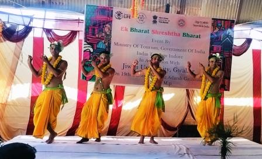

The Deshaj Darshan Rural Tourism Festival was held at Adarsh Gaushala in Gwalior on Jan 24–25, 2024. Organized under EBSB and Madhya Pradesh Tourism, the event promoted cow-centric traditions alongside cultural exchange.
Over 350 attendees—including students, gau-sevaks, and researchers—participated in village rituals, gaushala walks, cow worship ceremonies, folk performances, and sustainable farming discussions.
By spotlighting gaushala infrastructure—like calf blocks, herbal gardens, and bio‑CNG units—the festival highlighted how modern practices sustain cow welfare. Through talks and exhibitions, attendees learned about indigenous farming and ethical cow care, empowering local communities to safeguard bovine lives.

The festival turned Adarsh Gaushala into a living lab — a center for awareness, innovation, and integration of cow welfare into tourism and sustainable living.